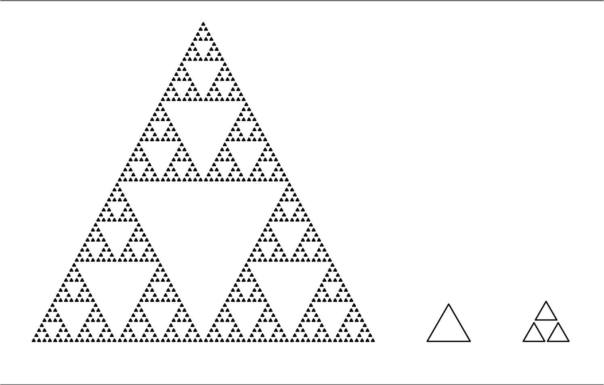
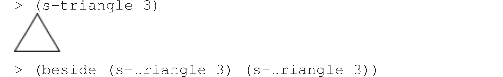
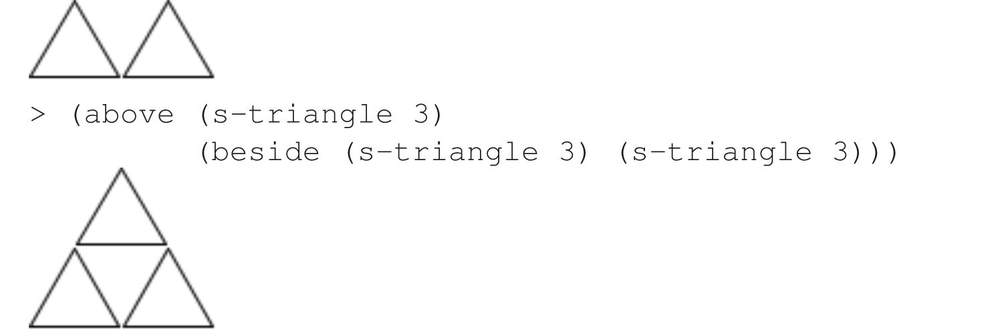
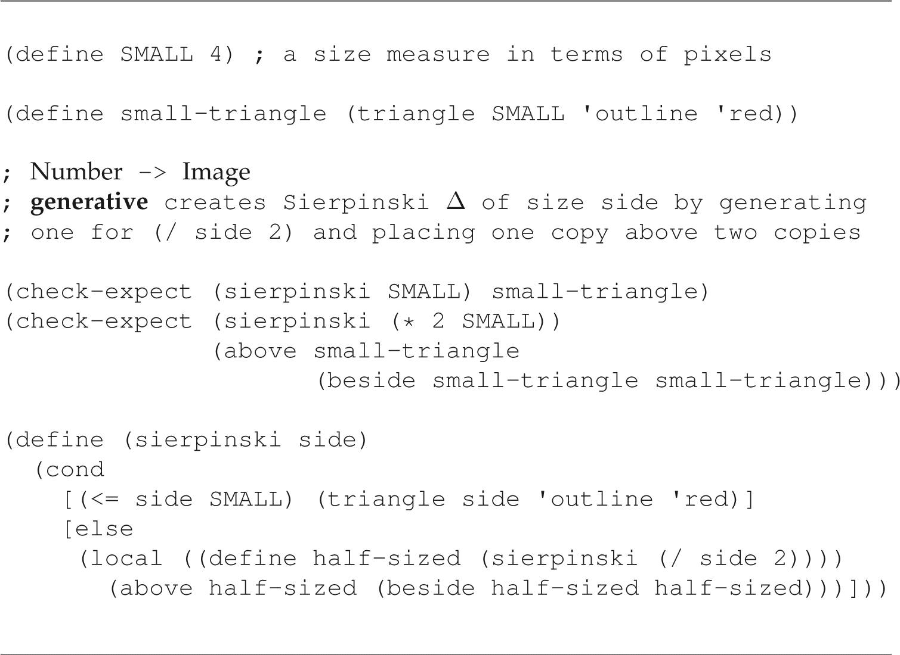

27.1 Fractals, a First Taste
Fractals play an important role in computational geometry. Flake writes in The Computational Beauty of Nature (The MIT Press, 1998) that “geometry can be extended to account for objects with a fractional dimension. Such objects, known as fractals, come very close to capturing the richness and variety of forms found in nature. Fractals possess structural self-similarity on multiple ⋯ scales, meaning that a piece of a fractal will often look like the whole.”
Figure 156 displays an example of a fractal shape, known as the Sierpinski triangle. The basic shape is an (equilateral) triangle, like the one in the center. When this triangle is composed sufficiently many times in a triangular fashion, we get the left-most shape.

Figure 156: The Sierpinski triangle
The right-most image in figure 156 explains the generative step. When taken by itself, it says that, given a triangle, find the midpoint of each side and connect them to each other. This step yields four triangles; repeat the process for each of the outer of these three triangles unless these triangles are too small.
We owe this solution to Marc Smith.
An alternative explanation, well suited for the shape composition functions in the 2htdp/image library, is based on the transition from the image in the center to the image on the right. By juxtaposing two of the center triangles and then placing one copy above these two, we also get the shape on the right:


This section uses the alternative description to design the Sierpinski algorithm; chapter 34.3 deals with the first description. Given that the goal is to generate the image of an equilateral triangle, we encode the problem with a (positive) number, the length of the triangle’s side. This decision yields a signature, a purpose statement, and a header:
; Number -> Image
; creates Sierpinski triangle of size side
(define (sierpinski side)
(triangle side 'outline 'red))
Now it is time to address the four questions of generative recursion:
• When the given number is so small that drawing triangles inside of it is pointless, the problem is trivial.
• In that case, it suffices to generate a triangle.
• Otherwise, the algorithm must generate a Sierpinski triangle of size side / 2 because juxtaposing two such triangles in either direction yields one of size side.
• If half-sized is the Sierpinski triangle of size side / 2, then
(above half-sized
(beside half-sized half-sized))
is a Sierpinski triangle of size side.
With these answers, it is straightforward to define the function. Figure 157 spells out the details. The “triviality condition” translates to (<= side SMALL) for some constant SMALL. For the trivial answer, the function returns a triangle of the given size. In the recursive case, a local expression introduces the name half-sized for the Sierpinski triangle that is half as big as the specified size. Once the recursive call has generated the small Sierpinski triangle, it composes this image via above and beside.

Figure 157: The Sierpinski algorithm
The figure highlights two other points. First, the purpose statement is articulated as an explanation of what the function accomplishes
; creates Sierpinski triangle of size side by …
and how it accomplishes this goal:
; … generating one of size (/ side 2) and
; placing one copy above two composed copies
Second, the examples illustrate the two possible cases: one if the given size is small enough, and one for a size that is too large still. In the latter case, the expression that computes the expected value explains exactly the meaning of the purpose statement.
Since sierpinski is based on generative recursion, defining the function and testing it is not the last step. We must also consider why the algorithm terminates for any given legal input. The input of sierpinski is a single positive number. If the number is smaller than SMALL, the algorithm terminates. Otherwise, the recursive call uses a number that is half as large as the given one. Hence, the algorithm must terminate for all positive sides, assuming SMALL is positive, too.
One view of the Sierpinski process is that it divides its problem in half until it is immediately solvable. With a little imagination, you can see that the process can be used to search for numbers with certain properties. The next section explains this idea in detail.